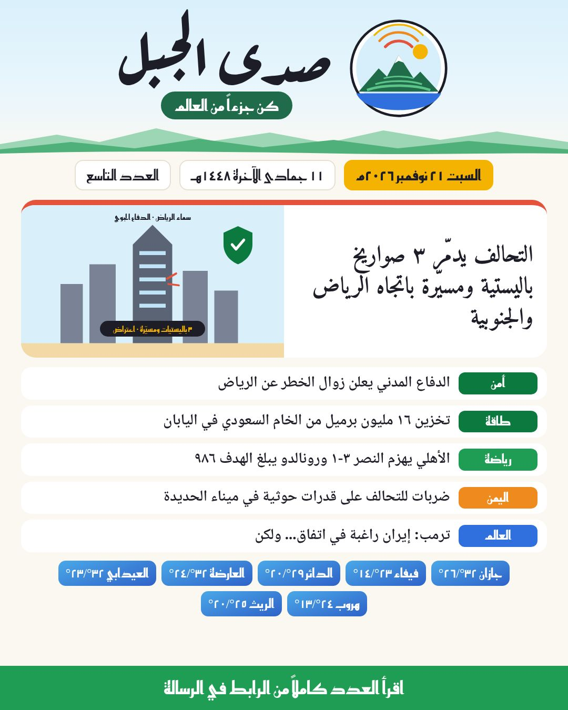
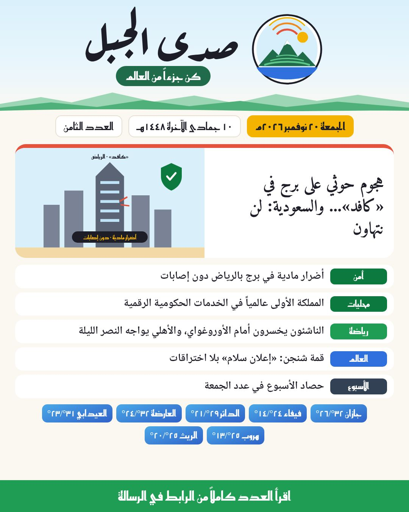
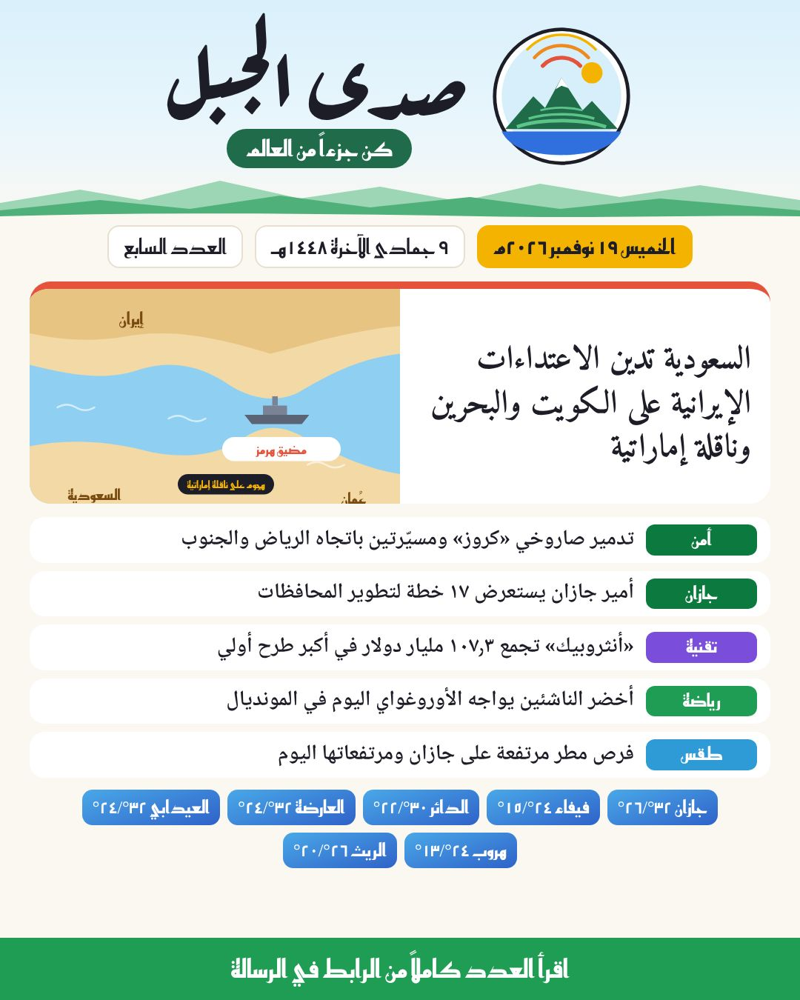
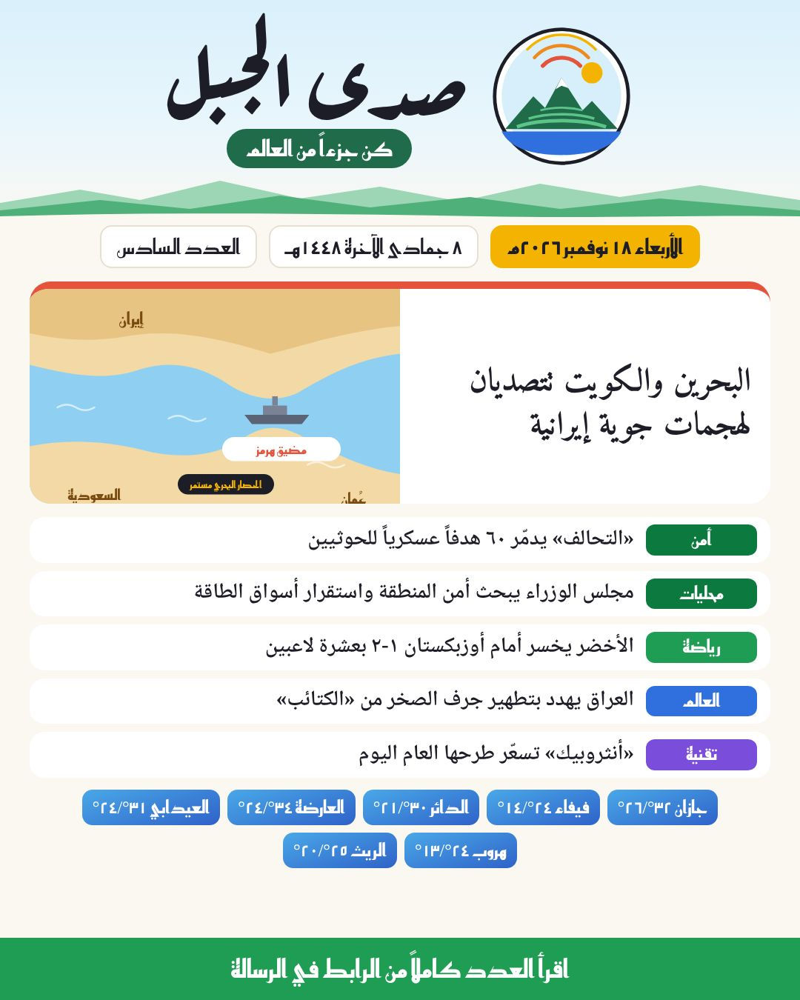
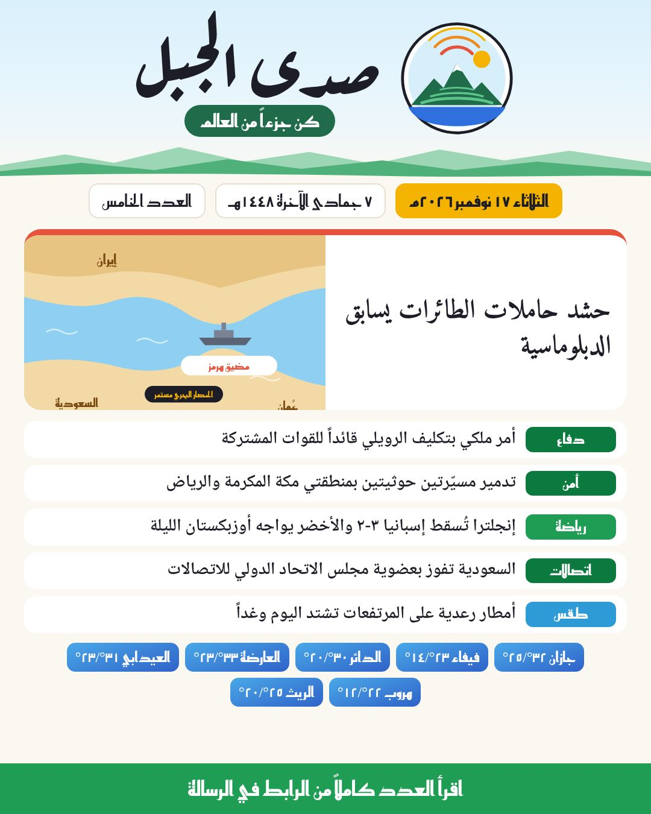
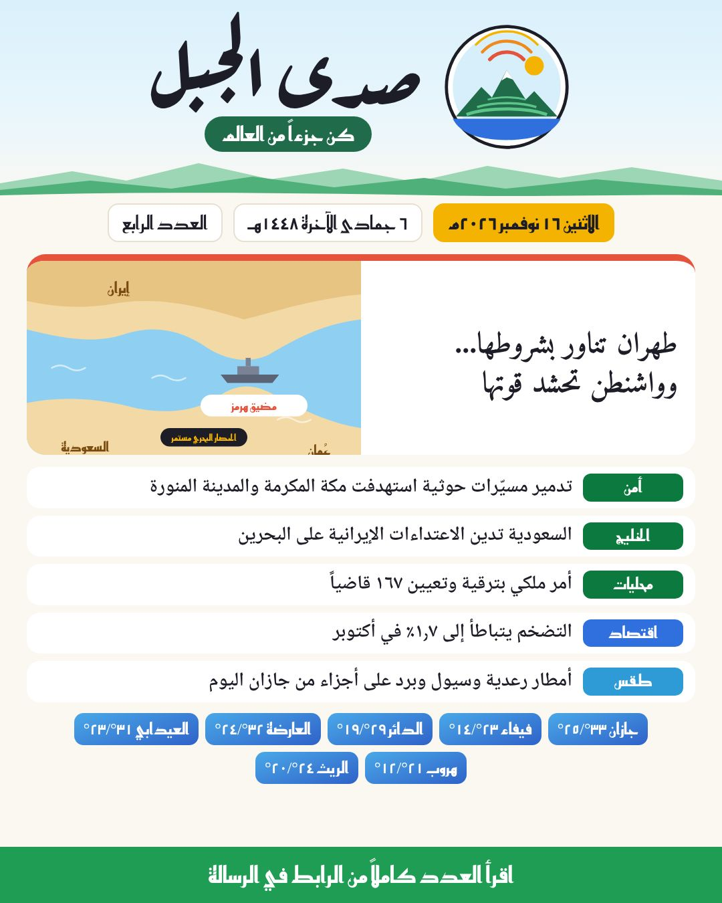
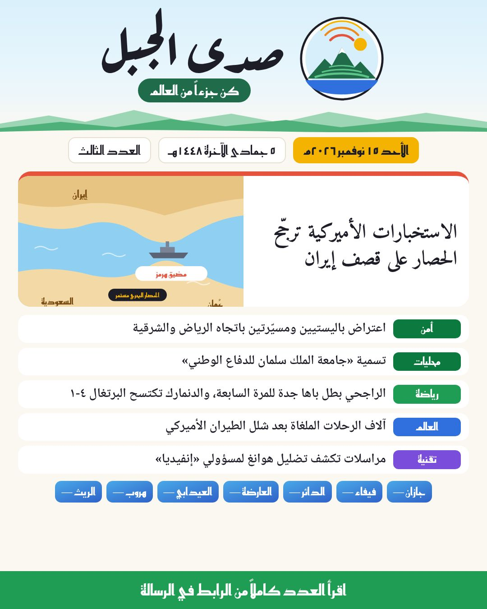
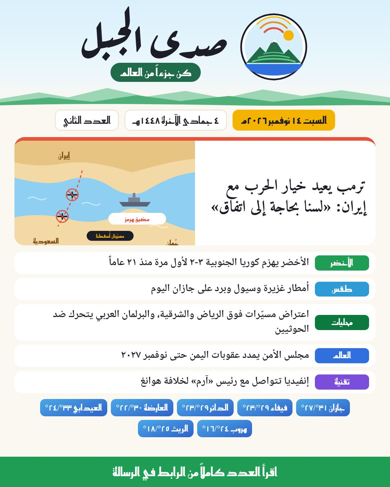
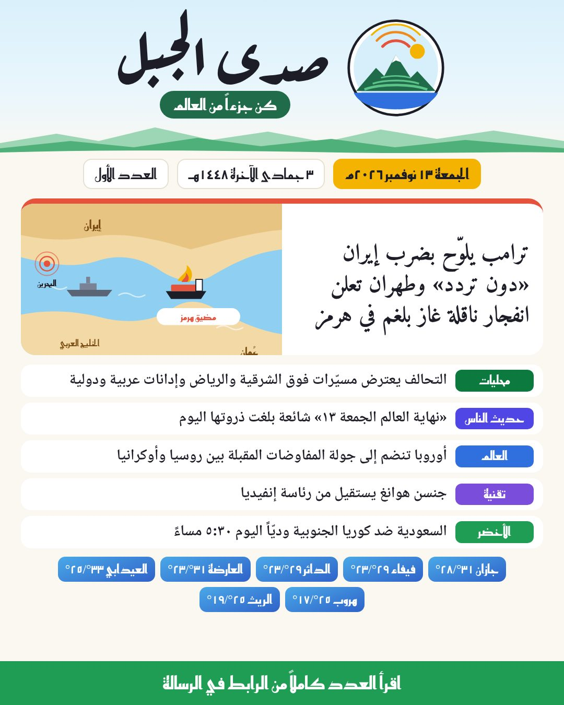

صدى الجبل — العدد التاسع · السبت ٢١ نوفمبر ٢٠٢٦التحالف يدمّر ٣ صواريخ باليستية ومسيّرة باتجاه الرياض والجنوبية · السعودية تتفق على تخزين ١٦ مليون برميل نفط في اليابان · الأهلي يهزم النصر ٣-١

صدى الجبل — العدد الثامن · الجمعة ٢٠ نوفمبر ٢٠٢٦هجوم حوثي على برج في «كافد» الرياض دون إصابات · السعودية: لن نتهاون مع أي اعتداء · المملكة الأولى عالمياً في الخدمات الحكومية الرقمية

صدى الجبل — العدد السابع · الخميس ١٩ نوفمبر ٢٠٢٦السعودية تدين الاعتداءات الإيرانية على الكويت والبحرين وناقلة إماراتية · «التحالف» يدمّر صاروخي «كروز» ومسيّرتين · «أنثروبيك» تجمع ١٠٧٫٣ مليار دولار في أكبر طرح أولي

صدى الجبل — العدد السادس · الأربعاء ١٨ نوفمبر ٢٠٢٦«التحالف» يدمّر ٦٠ هدفاً عسكرياً للحوثيين · البحرين والكويت تتصديان لهجمات جوية إيرانية · الأخضر يخسر أمام أوزبكستان ١-٢

صدى الجبل — العدد الخامس · الثلاثاء ١٧ نوفمبر ٢٠٢٦أمر ملكي بتكليف الرويلي قائداً للقوات المشتركة · حشد حاملات الطائرات يسابق الدبلوماسية · إنجلترا تُسقط إسبانيا ٣-٢ في مدريد

صدى الجبل — العدد الرابع · الاثنين ١٦ نوفمبر ٢٠٢٦تدمير مسيّرات حوثية استهدفت مكة والمدينة · السعودية تدين الاعتداءات الإيرانية على البحرين · أمر ملكي بترقية وتعيين ١٦٧ قاضياً

صدى الجبل — العدد الثالث · الأحد ١٥ نوفمبر ٢٠٢٦الدفاعات السعودية تعترض باليستيين ومسيّرتين باتجاه الرياض والشرقية · الاستخبارات الأميركية ترجّح الحصار على قصف إيران · الدنمارك تكتسح البرتغال ٤-١

صدى الجبل — العدد الثاني · السبت ١٤ نوفمبر ٢٠٢٦ترمب يعيد خيار الحرب مع إيران · الأخضر يهزم كوريا الجنوبية ٣-٢ لأول مرة منذ ٢١ عاماً · أمطار غزيرة وسيول على جازان اليوم

صدى الجبل — العدد الأول · الجمعة ١٣ نوفمبر ٢٠٢٦انفجار ناقلتين في هرمز · مسيّرات تُعترض فوق الرياض والشرقية · الأخضر يواجه كوريا · طقس محافظات جازان الجبلية